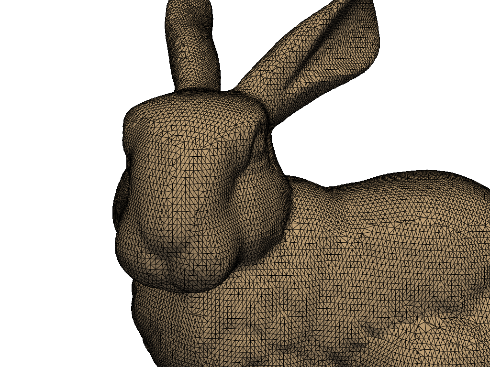

Note
Click here to download the full example code
Anti-Aliasing#
Demonstrate anti-aliasing within PyVista.
PyVista supports three types of anti-aliasing:
"ssaa"- Super-Sample Anti-Aliasing"msaa"- Multi-Sample Anti-Aliasing"fxaa"- Fast Approximate Anti-Aliasing
By default, anti-aliasing is disabled, but can be enabled globally with:
>>> import pyvista as pv
>>> pv.global_theme.anti_aliasing = 'ssaa'
Which anti-aliasing technique should you use?
Those who have PCs with high-end configuration should opt for "ssaa" or
"msaa". Low-end PCs should use "fxaa".
import pyvista as pv
from pyvista import examples
bunny = examples.download_bunny()
No Anti-Aliasing#
First, let’s show a plot without any anti-aliasing.
Fast Approximate Anti-Aliasing (FXAA)#
FXAA is the most performant of all three anti-aliasing techniques. This is because, in terms of hardware or GPU, FXAA is not that demanding. It directly smooths the 2D image and this reduces the strain over GPU, making it best for low-end PCs.
Because FXAA only operates on the rendered image, FXAA may result in smoothing out parts of the visual overlay that are usually kept sharp for reasons of clarity as well as smoothing out textures. In general, FXAA is inferior to MSAA and SSAA.
pl = pv.Plotter()
pl.add_mesh(bunny, show_edges=True)
pl.enable_anti_aliasing('fxaa')
pl.camera_position = cpos
pl.show()
Multi-Sample Anti-Aliasing (MSAA)#
MSAA, or Multi-Sample Anti-Aliasing is an optimization of SSAA that reduces the amount of pixel shader evaluations that need to be computed by focusing on overlapping regions of the scene. The result is anti-aliasing along edges that is on par with SSAA and less anti-aliasing along surfaces as these make up the bulk of SSAA computations. MSAA is substantially less computationally expensive than SSAA and results in comparable image quality.
pl = pv.Plotter()
pl.add_mesh(bunny, show_edges=True)
pl.enable_anti_aliasing('msaa')
pl.camera_position = cpos
pl.show()
Super-Sample Anti-Aliasing (SSAA)#
SSAA, or Super-Sample Anti-Aliasing is a brute force method of anti-aliasing. It results in the best image quality but comes at a tremendous resource cost. SSAA works by rendering the scene at a higher resolution. The final image is produced by downsampling the massive source image using an averaging filter. This acts as a low pass filter which removes the high frequency components that would cause jaggedness.
pl = pv.Plotter()
pl.add_mesh(bunny, show_edges=True, line_width=2) # lines are thinner in SSAA
pl.enable_anti_aliasing('ssaa')
pl.camera_position = cpos
pl.show()
Total running time of the script: ( 0 minutes 0.800 seconds)